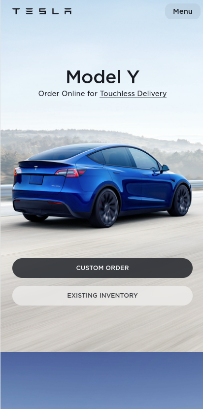

Design Principles Document
Isaac Asiedu
Alignment
Starbucks
www.starbucks.comAn observer can read the image more readily and clearly if it is aligned. This is accomplished by aligning objects to establish order and prevent placing components in the image indiscriminately. The photos and content on the Starbucks pages have been aligned in a pleasing fashion. This clearly demonstrates that arranging a page's contents makes it more appealing to visitors.
Contrast
Apple
www.apple.comThe user is compelled to notice crucial features inside the piece because of the contrast. Contrast draws the viewer's attention to two or more things in the image that differ or even clash because of their size, color, or content. Despite the dark background, visitors can clearly view the information and graphics on this page.
Repetition
Tesla
www.tesla.com The employment of the same fonts, colors, and layouts repeatedly gives the image order. This not only helps to orient the spectator, but it also shows how particular themes can be gently accentuated by reappearances of the same or similar object. In the same way that this page does.